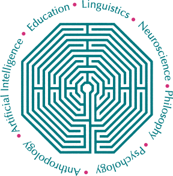
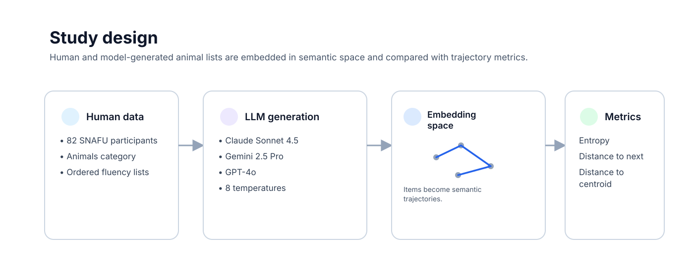
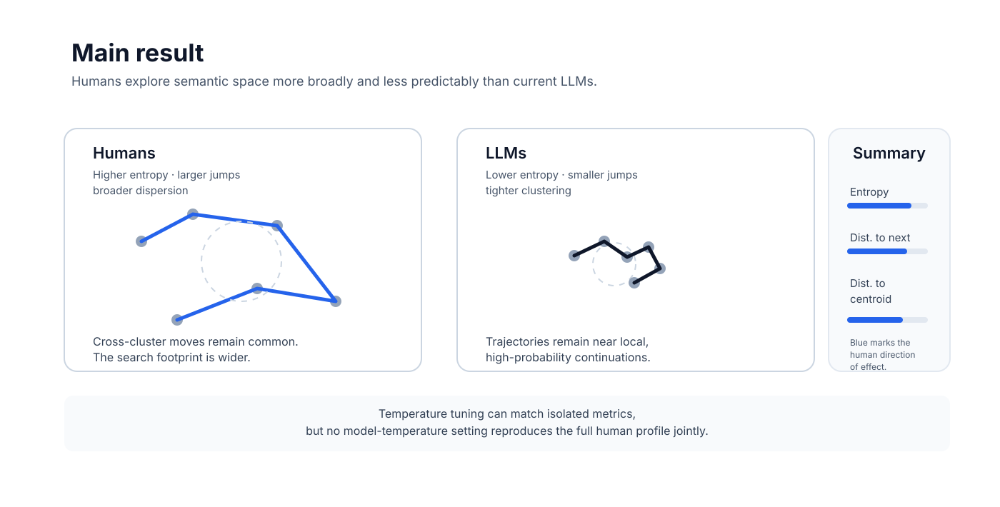

Comparing Semantic Navigation in Humans and Large Language Models
using Natural Language Processing
Correspondence: felipe.toro@ufabc.edu.br
Abstract
Semantic memory retrieval can be understood as navigation through conceptual space. This paper compares semantic search dynamics between humans and three large language models using verbal fluency data. Ordered response trajectories are quantified with three complementary NLP metrics: entropy for predictability of step sizes, distance to next for successive semantic jumps, and distance to centroid for global dispersion. Humans showed higher entropy, larger semantic steps, and broader dispersion than all tested LLMs. Temperature tuning produced only partial alignments: some settings matched isolated metrics, but no model-temperature configuration reproduced the full human profile jointly.


Method
Data and generation
- Human baseline from the SNAFU dataset, restricted to the animals category.
- Three LLMs evaluated: Claude Sonnet 4.5, Gemini 2.5 Pro, and GPT-4o.
- Role-playing induction used to diversify model outputs.
- Model output lengths matched to the empirical human distribution.
Semantic analysis
- Items embedded with
text-embedding-3-large. - Cumulative embeddings used to represent evolving trajectory state.
- Distance to centroid computed on non-cumulative item embeddings.
- Comparisons tested with generalized linear mixed-effects models.
Key findings
Humans are more exploratory
Across all models, human trajectories showed higher entropy, larger semantic jumps, and broader dispersion. This suggests a search process that combines local retrieval with more frequent movement to distant semantic regions.
Temperature is not enough
Changing temperature altered model behavior, but only in fragmented ways. A setting that looked human-like on one metric generally failed to match the others.
Global dispersion is hardest to match
Distance to centroid remained especially difficult for LLMs to reproduce, suggesting that broader semantic coverage depends on deeper representational constraints than sampling noise alone.
Implication for cognitive modeling
These models can still be useful comparators, but the results caution against treating current LLMs as straightforward psychological surrogates for human semantic memory search.
BibTeX
@inproceedings{colombo2026semanticnavigation,
title={Comparing Semantic Navigation in Humans and Large Language Models using Natural Language Processing},
author={Colombo, Gabriel Paris and Cabral-Carvalho, Rodrigo M. and Toro-Hernandez, Felipe D},
booktitle={Proceedings of the Annual Meeting of the Cognitive Science Society},
volume={48},
number={0},
year={2026},
address={São Paulo, Brazil},
institution={Center of Mathematics, Computation and Cognition (CMCC), Universidade Federal do ABC},
url={https://escholarship.org/uc/cognitivesciencesociety/48/0}
}